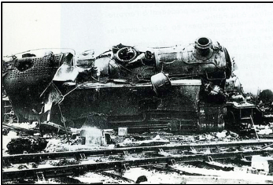

Le rôle majeur des cheminots
Les actions de résistance du quotidien
De nombreux témoignages et archives mentionnent le rôle majeur des cheminots dans la résistance à Drancy ainsi que dans la Libération de la ville en lien avec le parti communiste.
Les cheminots du dépôt Grande Ceinture de Bobigny (en réalité localisé à Drancy) Louis Méret [1], Robert Quint [2] et Léon Bénil [3] témoignent longuement des actions des employés de la SNCF contre l’occupant tout comme le coiffeur drancéen René Janvier [4] en lien avec de nombreux cheminots au sein du mouvement de résistance communiste Front National.
Ces documents relatent d’abord l’importance de l’implantation du parti communiste et de ses militants parmi les cheminots du dépôt de Bobigny. Ce militantisme leur a permis d’être organisé ce qui va servir leurs actions durant la résistance. Au départ, à partir de 1940, les actes de résistance des cheminots consistent essentiellement en la distribution de tracts, de titres de la presse clandestine de la Résistance tels que La Vie Ouvrière et l’Humanité. L’objectif principal est ainsi d’informer la population que l’occupation nazie n’est pas la seule voie pour la France.
Certains cheminots organisent également le recrutement de résistants comme le raconte René Janvier qui évoque la venue dans son salon de coiffure du « camarade cheminot « Rossignol » un triste dimanche de novembre 1941 » pour lui proposer de « rentrer dans la Résistance ».
Les cheminots, et particulièrement ceux du « centre de triage du Bourget-Drancy-Le Blanc-Mesnil » organisent également la collecte de renseignements sur le transport des troupes allemandes vers la Russie.
Louis Méret, Robert Quint et Léon Bénil évoquent, quant à eux, le rôle actif des cheminots dans le sabotage de trains. En effet, les cheminots du dépôt de Bobigny sont sous les ordres des soldats allemands et organisent les réparations des machines « en dépit du bons sens » : ils prennent plusieurs jours pour effectuer des tâches rapides, mettent du sable dans les essieux, font disparaître des « coussinets de levage », coupent des boyaux servant à coupler des machines.
Louis Méret mentionne également l’aide que les cheminots apportent aux prisonniers évadés en les accueillant dans leur dortoir, en leur fournissant des habits et du ravitaillement et en les transportant jusqu’à « Villeneuve » où ils les confient à d’autres « visiteurs ». Il mentionne également la distribution du charbon faite aux habitants de Drancy à partir des caisses à charbon destinées aux train et vidées.
Chrisly, Siham, Wally.
Une intensification des opérations de sabotage à partir du 10 août 1944
Le rôle des cheminots de Drancy va s’accélérer à partir du débarquement du 6 juin 1944 avec la préparation active de la Libération. A partir de cette date, Robert Quint expliquent que ses camarades transmettent « à l’échelon supérieur » des renseignements sur la destination de certains convois de soldats allemands vers l’ouest de la France. Léon Bénil insiste, lui, sur l’intensification des actes de sabotage dans le dépôt de Bobigny à partir de l’annonce du débarquement avec de plus en plus de déraillements de trains dus à la « disparition des poignées de frein » ou au sabotage des voies afin de « ralentir au possible le transit des troupes allemandes vers la Normandie ».
Des documents des archives municipales relatent également le rôle des cheminots membres du mouvement de résistance Libération-Nord, M. A. Boittiaux, chef du dépôt et son adjoint, M. Gardebois, qui dans la nuit du 13 au 14 juillet sont montés sur le toit de la rotonde du dépôt afin d’y déposer un drapeau français, « ce qui fut un camouflet »3 pour les allemands.
Les familles des cheminots sont aussi impliqués dans cette résistance symbolique puisque le 14 juillet, fleurissent de nombreux vêtements bleu, blanc et rouge sur les cordes à linge dans les jardins de la cité du Nord à Drancy, résidence pavillonnaire habitée par les cheminots et leurs familles.
Le 10 août 1944, une grève générale est déclenchée chez les cheminots. Louis Méret appelle ses camarades de Bobigny à la suivre ; elle est votée à l’unanimité. L’objectif principal est que « plus une machine ne sorte du dépôt »2 afin de paralyser les transports des troupes allemandes.
Cette grève va vite devenir insurrectionnelle et les cheminots participent alors activement à la préparation de la Libération de leur commune. Ils se procurent des armes, montent des barricades, déboulonnent des voies, incendient un train d’essence à Bobigny.
Cependant, les cheminots ne font pas qu’œuvre pour libérer le territoire, ils pensent également à sa refondation. En effet, dans son témoignage, L. Méret mentionne les efforts faits par les cheminots tout le mois d’août 1944 pour contrer les tentatives des allemands de faire sauter le dépôt en enlevant les bombes qu’ils y placent et en veillant à mettre à l’abri les machines ferroviaires qui seront indispensables à faire redémarrer le pays.
Neera, Younès.
Archives
- [1] Témoignage de Louis Méret du 11 octobre 1944 publié dans le journal la Voix de l’Est, en juillet 1984, archives municipales de Drancy.
- [2] Témoignage de Robert Quint suite à l’appel lancé par la SNCF pour recueillir des témoignages sur des hommes et des femmes ayant vécu la seconde guerre mondiale, mai 2012, archives municipales de Drancy.
- [3] Témoignage de Léon Bénil, 20 novembre 1994, archives municipales de Drancy.
- [4] Témoignage de René Janvier, publié dans le journal la Voix de l’Est, en août 1984, archives municipales de Drancy.